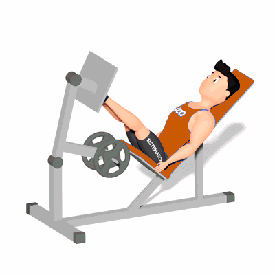

Leg Press Articulado

Exercício para fortalecimento e hipertrofia dos músculos da coxa e glúteo, mais especificamente os Quadríceps, Isquiotibiais e Glúteo Máximo.
Ficha Técnica
Tipo: Musculação
Grupo Muscular: Perna
Aparelho: Nenhum
Músculos: Nenhum
Como realizar
- Posicione no aparelho, costas apoiadas no encosto;
- Pés em uma distância similar a largura dos ombros;
- Com os joelhos flexionados, posicione os pés à frente do corpo na plataforma;
- Manter os pés e joelhos alinhados durante a execução, coluna reta e abdome contraído;
- Empurre a plataforma estendendo os joelhos;
- Retorne à posição inicial flexionando os joelhos e repita os movimentos.
 RC STORE
RC STORE